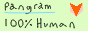

Please consider running a NTP server in the NTP Pool
Do you have a spare computer, or a VPS with some extra bandwidth? Do you have the ability to accept inbound connections? If so, I want you to please consider joining the NTP Pool.
It’s needed
The NTP Pool always needs more servers. You’re probably using it without even knowing — most Linux distributions use pool.ntp.org as their default NTP server, along with FreeBSD, OpenBSD, many consumer routers, printers, thermostats, embedded devices…
There is always massive demand for NTP servers; although less than 100 bytes cross the wire for a typical NTP query packet, basically every network‐connected device in the world queries it several times a day, so it adds up.
There are fewer servers than you’d expect: as of the time I’m drafting this, the pool has about 3,800 active IPv4 servers and about 2,300 active IPv6 servers, supporting ~a billion devices.
It’s easy
You do not need a very powerful computer or a very strong connection to join the NTP Pool.
As of the time I’m drafting this, the dreamstation.systems NTP server answered about 743 million queries in the past 24 hours, from a VPS with one shared vcore on a 2016 Xeon (with reported CPU usage from chronyd and the kernel networking stack only being about 25%), using less than 60 GB per day of bandwidth. You do not even need to handle so many queries — I recommend setting your “net speed” to the minimum “512 Kbit” at first and scaling up while seeing how much traffic you can handle. (In your NTP Pool server management settings, “net speed” is just a relative measure of how much regional traffic the pool directs to you — it has no relation to your actual link speed and no guarantees on how much absolute traffic you will get. I have my net speed set to 3 Gbit and am getting less than 6 Mbps of NTP traffic.) Any bottom‐of‐the‐barrel VPS will do.
You do not need a fancy clock. You do not need to be stratum 1, and timekeeping in virtual machines has gotten way better recently. Hell, if you can keep your clock accurate within 100 ms, you’re good enough for the pool (which is insanely forgiving).
A warning
This is a long‐term commitment. You can remove yourself from the pool whenever you like, but due to misbehaving NTP clients and misguided configurers resolving a singular pool IP once and hardcoding it in a fleet of devices, it can take months, years, or forever for the traffic to stop. (I e‐mailed Dave Plonka about the 2003 Netgear–University of Wisconsin incident recently, and apparently they still see a bit of traffic from these routers.) For a long time after removing yourself from the NTP Pool, you will continue to get hammered on UDP 123 for years.